Radiation transfer in plant canopies
How does light interact with plants?
Radiation transfer in plant canopies
Transmission of solar radiation in a foggy West Coast Forest
Lecture Review Quiz (iClicker)
We have a lecture review quiz this Friday (September 29th).
A - True
B - False
Learning Objectives
- Describe how is short-wave radiation is distributed within a plant canopy.
- Explain how different wavelengths behave differently within the canopy.
- Understand how radiation distribution affect photosynthesis in a plant canopy.
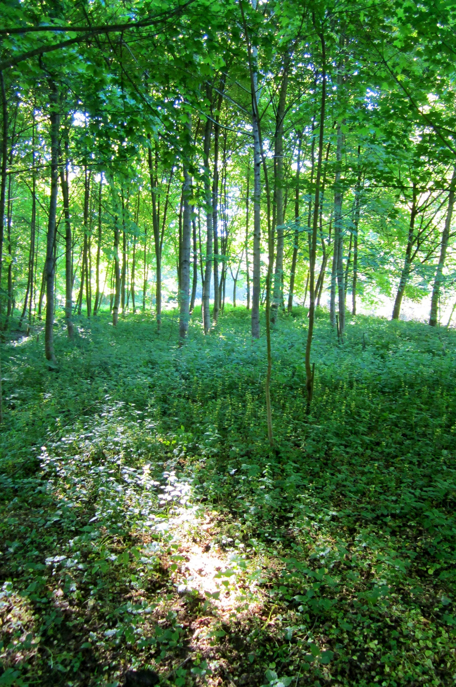
Beer’s Law
Beer’s Law describes the attenuation (reduction in flux density) of a beam of radiation through a homogeneous medium.
\[ R_x = R_0 e^{-k\mu} \qquad(1)\]
- \(\mu\) is the attenuation coefficient
- Combination of absorptance and reflectance
- Will vary with \(\lambda\)
Beer’s Law
Strictly speaking - the law only applies to homogenous media.
- Attenuation will vary with because composition & density vary
Beer’s Law
Strictly speaking - the law only applies to homogenous media.
- However, it measurements show it roughly applies in uniform canopies
- e.g., grass
- We can develop empirical (observation based) relationships for different plant canopies
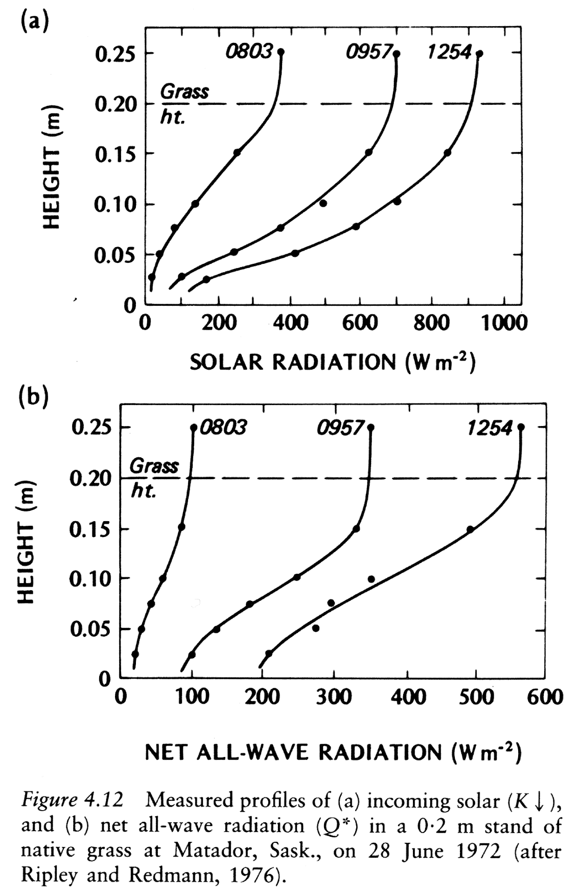
Vertical distribution of folliage
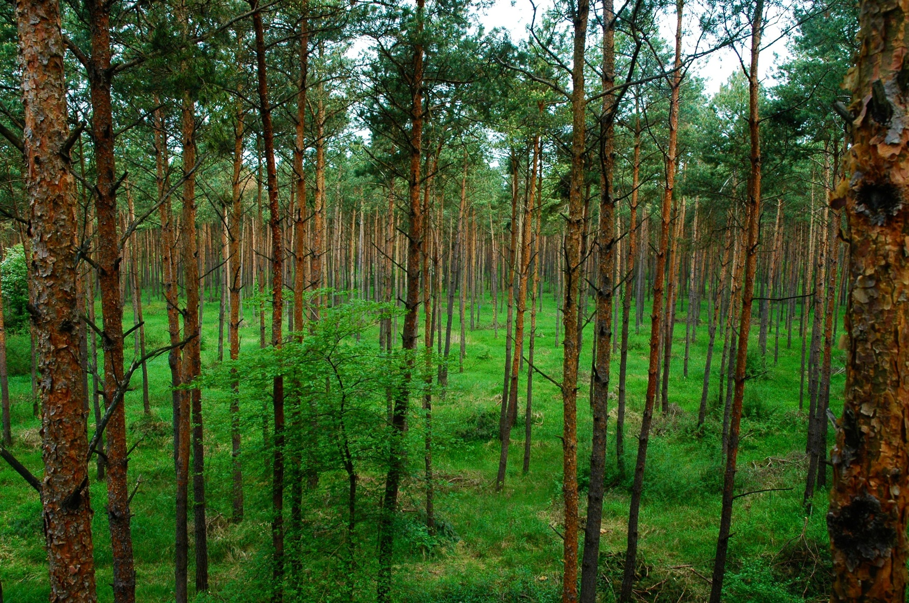Modifying Beer’s Law to apply to
- The main modification to overcome the non-uniformity of leaves is to replace distance (x) with the cumulative leaf area index (LAI).
- What is LAI?
- The leaf area index is the one-sided leaf (and stem) area per unit ground area.
Leaf Area Index
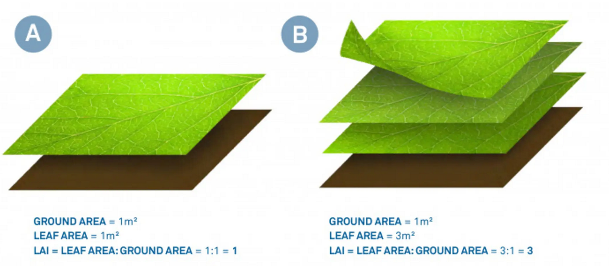Leaf Area Index
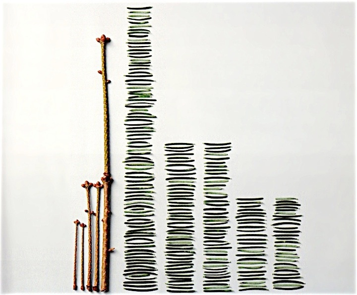
Modifying Beer’s Law
Cumulative LAI (L) = sum of LAI
- Integration of LAI through canopy starting at top of canopy
Orientation of canopy leaf area
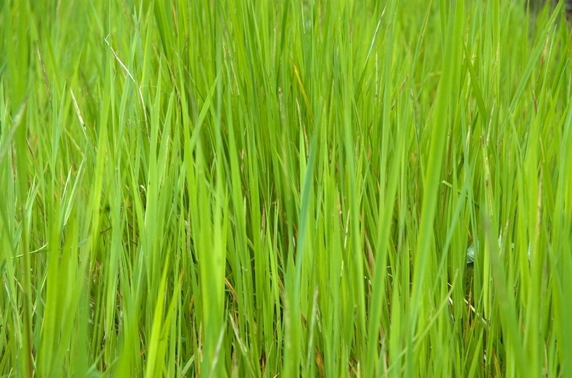
Leaf Orientation
The canopy attenuation coefficient is related to the orientation of the leaves in relation to the sun angle:
- Erectophile vs. planophile
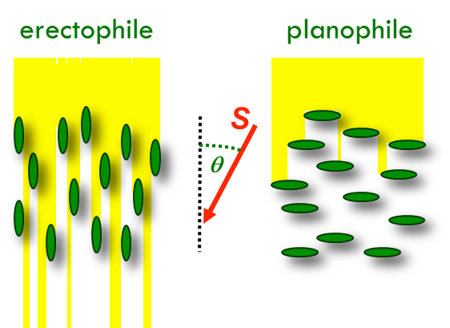
Spatial Heterogeneity
Consider the similarity/dissimilarity across space.
- A homogenous canopy will have a more even distribution across
- The attenuation coefficient will be less variable
- A heterogeneous canopy will have a less even distribution across
- The attenuation coefficient will be more variable
Spatial Heterogeneity
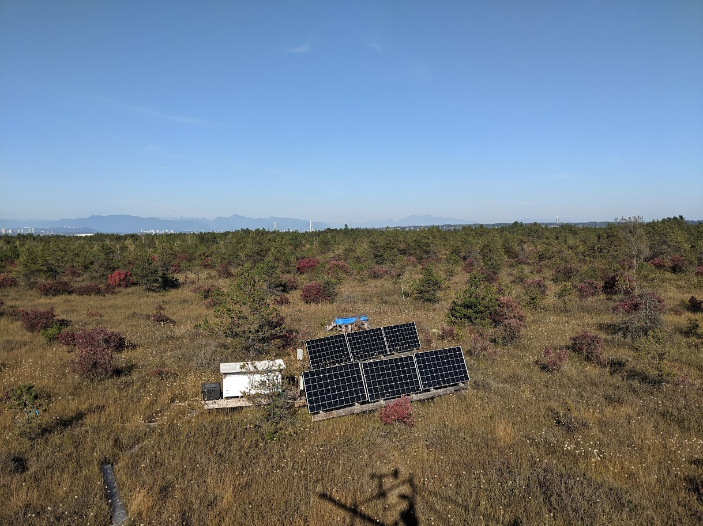
Modifying Beer’s Law
We rewrite Beer’s Law for solar radiation under a canopy as:
\[ R_u = R_0 e^{\frac{-GL\Omega}{cos\theta}} \qquad(2)\]
- \(R_0\) is irradiance above the canopy
- \(R_u\) is irradiance under the canopy
- \(L\) is the cumulative LAI
- \(G\) is the plant canopy attenuation coefficient
- \(\Omega\) is a clumping scale factor
- \(cos\theta\) accounts for the zenith angle
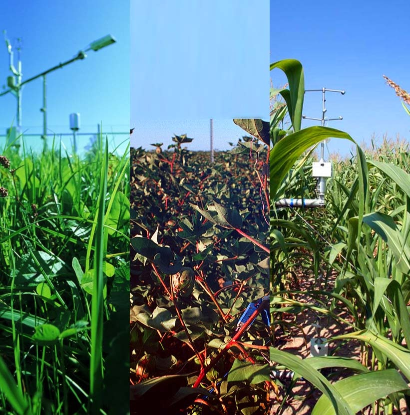
Canopy Transmission
Transmitted radiation will be a proportion of total incoming radiation.
\[ \tau_{\lambda} = \frac{R_{u\lambda}}{R_{0\lambda}} \qquad(3)\]
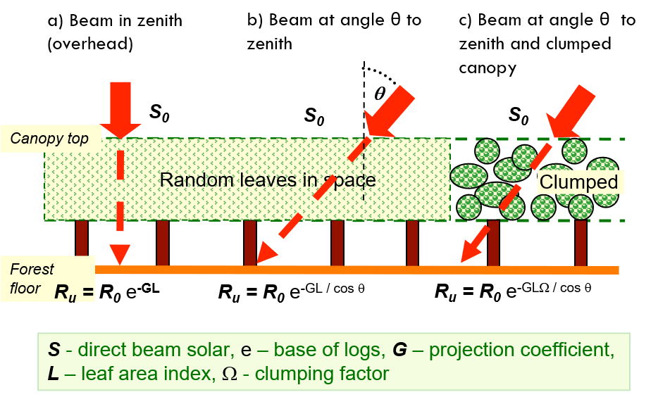
Canopy Transmission (iClicker)
Can you have a negative value for transmitted radiation?
A - Yes
B - No
Radiation beneath plant canopies
- Diffuse (d) radiation penetrates the canopy more effectively than direct (s) radiation
- Ratio \(\frac{SW_d\downarrow}{SW_s\downarrow}\) increases with depth into canopy.
- Scattering of direct radiation helps increase proportion of diffuse PAR in the canopy.
- \(\frac{NIR\downarrow}{PAR\downarrow}\) increases with depth into canopy.
- The high PAR absorptivity of leaves in the upper canopy results in depleted PAR in the lower canopy.
Changes with seasons

Changes with seasons
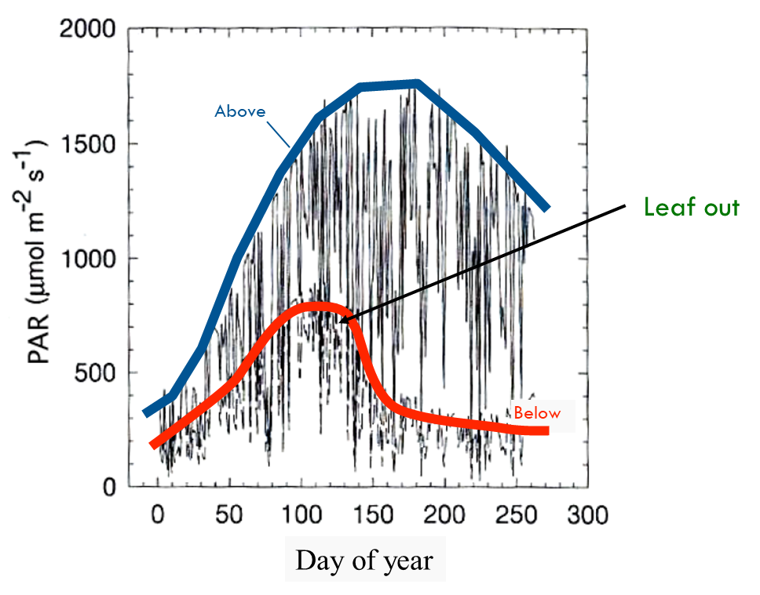
Changes with seasons (iClicker)
Which bar on the graph (A or B) would represent the proportion of radiation reaching the floor of a deciduous forest in late winter?
Radiation and understory
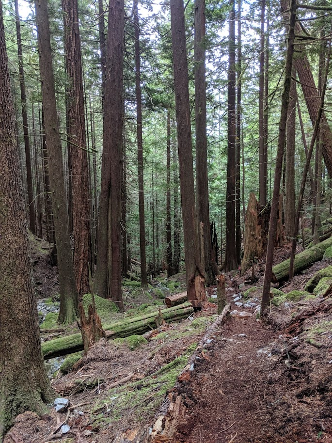
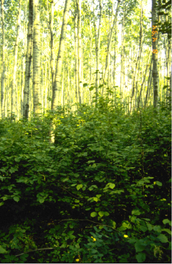
‘Sunflecks’
- Sunflecks move with position of sun
- Rapid change from sunlit to shadowed
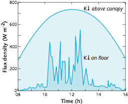
Temporally Variability
Canopy Position & Photosynthesis
Take home points
- Radiative transfer through plant canopies can be approximated using Beer’s Law using the cumulative Leaf Area Index (L) instead of the distance, plus path length and a clumping factor.
- Radiation within plant canopies is not uniformly distributed in space, time (‘sunflecks’) and with regard to spectral characteristics.
- We can use radiative transfer theory to infer the LAI of a stand if we measure short-wave radiation transmission.